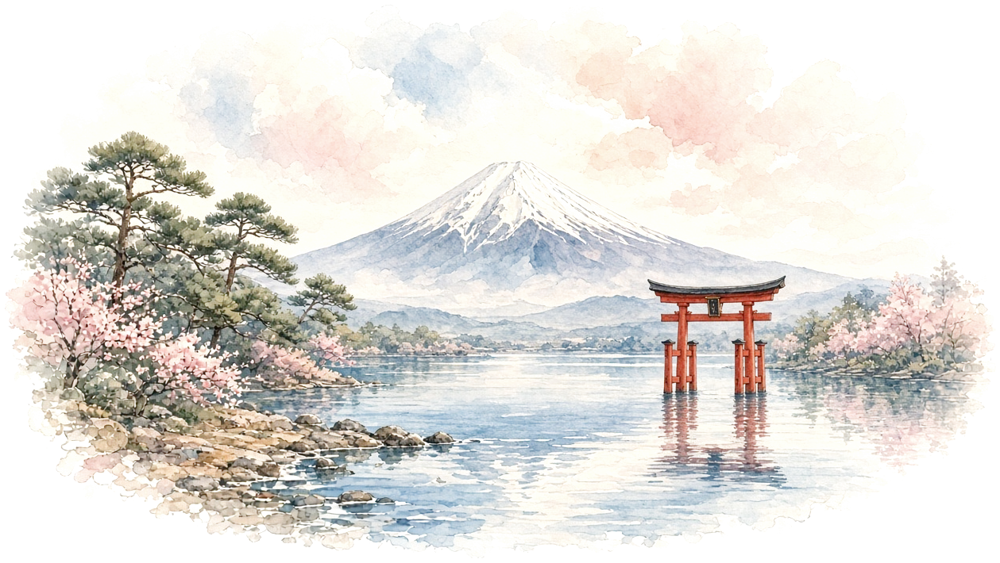

TRAVEL JOURNAL
2026
— 04 —
No. 01 · HONSHU
JAPAN
Good things happen here.
35°21′N · 138°43′E
· cold air, clear sky
· Fuji all morning
· the tower glowing at night
NIPPON
84
FUJIYOSHIDA
JAPAN · 2026
★
★

— 05 —
Fuji-san & me
日本
NIPPON
JR EXPRESS · BOARDING PASS
TOKYO
→
MT. FUJI
CLASS
2nd
SEAT
07A
YEAR
2026
No.
JP0126
cold air, clear sky